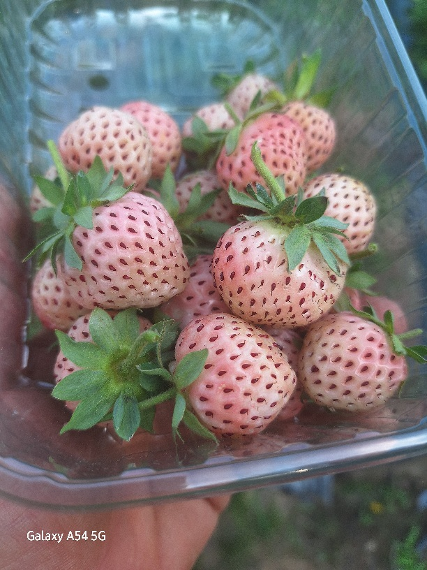

🍓 PINEBERRY – ЕКЗОТИЧНАТА БЯЛА ЯГОДА С ВКУС НА АНАНАС 🍍 Представяме ви един от най-интересните и редки сортове ягоди – Pineberry. На пръв поглед изглежда необичайно – бяла ягода с червени семенца, но вкусът ѝ е истинска изненада. Има лек аромат и вкус, напомнящ на ананас, откъдето идва и името ѝ. Този сорт е истинска атракция в градината – всеки, който я види, първо се учудва, а после иска да я опита. Предимства на Pineberry: 🍓 Уникален външен вид – бели плодове с червени семена 🍍 Лек ананасов аромат и приятен вкус 🌱 Подходяща за градина, оранжерия и саксии 🌿 Много интересен и рядък сорт 📸 Перфектна за впечатляващи снимки и десерти Плодовете са нежни, ароматни и различни от обикновените ягоди. Освен вкусни, те са и истинска атракция за гости и клиенти.
📞 Поръчки: 0877779963
⬅ Обратно към началната страница